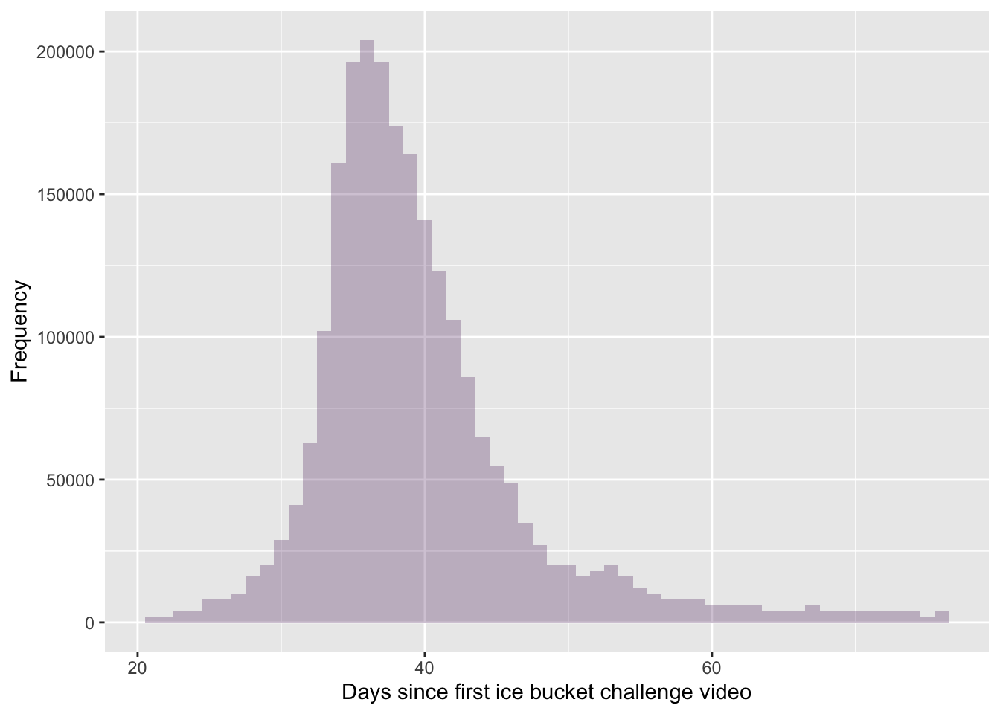
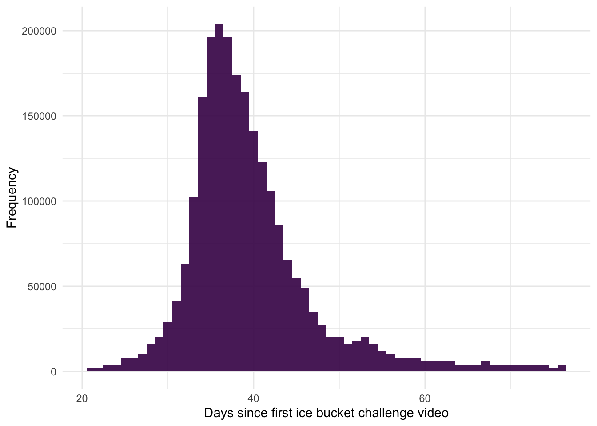

Rows: 2323000 Columns: 1
── Column specification ────────────────────────────────────────────────────────
Delimiter: ","
dbl (1): upload_day
ℹ Use `spec()` to retrieve the full column specification for this data.
ℹ Specify the column types or set `show_col_types = FALSE` to quiet this message.
Frequency tables
use group_by() and summarise() and n() functions from dplyr
group_by()
groups data by whatever variable(s) you name within the function
summarise()
creates summary table based on the variables in the function
n()
counts the number of scores
To count frequencies:
tell R to treat values that are the same, as being in the same category
group_by(upload_day) tells R that scores that are the same within upload_day are in the same group
subsequent operations are conducted on the groups
count how many scores fall into each category
summarize() creates a variable called frequency that counts how many items are in each group created by group_by()
this creates a new object called gp_freq_dist that contains each value within ice_tib but with an extra column/variable called days_group that indicates the bin the value of upload_day is in
Set notation
the value of upload_day now has a corresponding value of days_group containing the bin
the first score of 34 has been assigned to the bin labelled `(30, 34] which is the bin containing any score above 30, up to and including 34
the label uses standard mathematical notation for sets where ( or ) means ‘not including’ and [ or ] means ‘including’
now we can use summarize() and n() to count scores like before, except to use days_group instead of upload_day
Coding challenge
Create a grouped frequency table called gp_freq_dist by starting with the code in the code example and then using the code we used to create freq_tbl to create a pipe that summarizes the grouped scores.
we have an object gp_freq_dist that contains the number of days grouped into bins of 4 days and the number of videos uploaded during each of the time periods represented by those bins
to calculate the relative frequency we can use dplyr::mutate() to add a variable that divides the frequency by the total number of videos using sum()
... |>
dplyr::mutate(
relative_freq = frequency/sum(frequency) # creates a new column
)
Efficient Code
rather than creating the table of relative frequencies step-by-step, it is usually more efficient to carry out the steps in one piece of code
We’ve discussed elsewhere that if you include packages when you use functions (e.g., dplyr::mutate()) you don’t need to explicitly load the package (in this case dplyr). However, to create plots with ggplot2 you build them up layer by layer, which means you use a lot of ggplot2 functions. For this reason, I advise loading it at the start of your Quarto document and not worrying too much about including package references when you use functions. You can load it either with library(ggplot2) or by loading the entire tidyverse using library(tidyverse).
include fill = within the geom_histogram() function
ggplot2::ggplot(ice_tib, aes(upload_day)) +geom_histogram(binwidth =1, fill ="#440154")
Transparency and axis labels
ggplot2::ggplot(ice_tib, aes(upload_day)) +geom_histogram(binwidth =1, fill ="#440154", alpha =0.25) +labs(y ="Frequency", x ="Days since first ice bucket challenge video")

Themes
ggplot2::ggplot(ice_tib, aes(upload_day)) +geom_histogram(binwidth =1, fill ="#440154", alpha =0.9) +labs(y ="Frequency", x ="Days since first ice bucket challenge video") +theme_minimal()

Summarizing data
Mean and median
mean(variable, trim = 0, na.rm = FALSE)
trim
allows you to trim scores before calculating the mean by specifying a value between 0 and 0.5. default is 0 (no trim). to trim 10% of scores fom each end of the distribution you could set trim = 0.1
na.rm
stands for NA remove. Missing values are denoted NA, for ‘not available’. by setting na.rm = TRUE (or na.rm = T), R will remove missing values before computing the mean
Missing Values
The default in many functions is not to remove missing values (e.g. na.rm = FALSE). If you have missing values in your data and don’t change this default behaviour R will throw an error. Therefore, if you get an error from a function like mean(), check whether you have missing values and whether you have forgotten to set na.rm = TRUE.
The function for median is similar, except no trim (median is effectively the mean with 50% trim)
median(variable, na.rm = FALSE)
Code example
if the defaults are ok, there is no need to set those arguments
mean(ice_tib$upload_day)
[1] 39.678
To remove missing values:
mean(ice_tib$upload_day , na.rm =TRUE)
[1] 39.678
?mean
coding challenge
Find the median number of days after the original ice bucket video that other videos were uploaded.
median(ice_tib$upload_day)
[1] 38
Quantifying the ‘fit’ of the mean
var()
variance
var(variable_name, na.rm = FALSE)
sd()
standard deviation
sd(variable_name, na.rm = FALSE)
var() and sd() take the same syntax as mean()
coding challenge
Use what you learned in the previous section and the code example above to get the variance and standard deviation of the days since the original ice bucket video that other videos were uploaded.
var(ice_tib$upload_day)
[1] 59.94197
sd(ice_tib$upload_day)
[1] 7.74222
Inter-quartile range
IQR()
IQR(variable_name, na.rm = FALSE, type = 7)
IQR(ice_tib$upload_day, type =7)
[1] 7
IQR(ice_tib$upload_day, type =8)
[1] 7
Creating a summary table
used to comine all the above into one table
summarise()
ice_tib |>
dplyr::summarise(
median = median(upload_day), # creates new variable called `median` from the output of `median(upload_day)`
mean = mean(upload_day), # creates new variable called `mean` from the output of `mean(upload_day)`
...
)
coding challenge
Create a summary table containing the mean, median, IQR, variance and SD of the number of days since the original ice bucket video.
ice_tib |> dplyr::summarise(median =median(upload_day), # creates new variable called `median` from the output of `median(upload_day)`mean =mean(upload_day), # creates new variable called `mean` from the output of `mean(upload_day)`IQR =IQR(upload_day),var =var(upload_day),sd =sd(upload_day) )
# A tibble: 1 × 5
median mean IQR var sd
<dbl> <dbl> <dbl> <dbl> <dbl>
1 38 39.7 7 59.9 7.74
Code example
To store the summary of stats, we assign it to a new object: